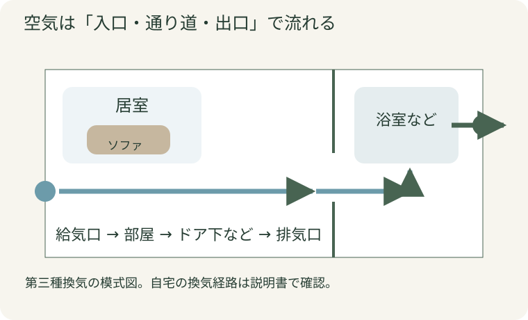
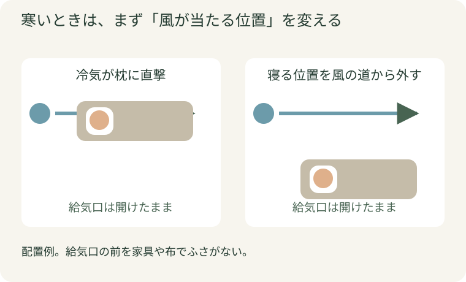
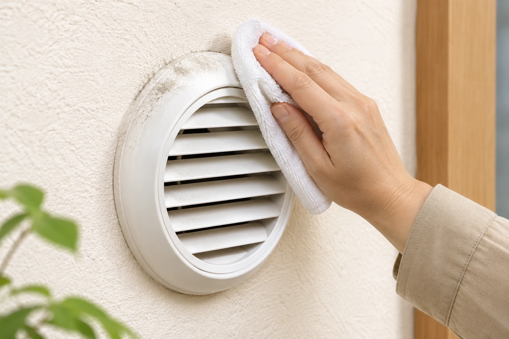

暖房をつけているのに、ソファに座ると首元がスースーする。壁の丸い換気口に手をかざすと、冷たい風。「ここを閉めたら暖かくなるのでは？」と、ふさぎたくなることもありますよね。
ただ、この小さな穴は、家の空気を入れ替える大切な入口です。閉じっぱなしにする前に、風が体に当たる場所、給気口の設定、フィルターの汚れを見直してみましょう。換気を続けながら、寒さを和らげる方法があります。
冷たい風を我慢せず、空気の通り道を整える
公開日：
 文｜エイスケ（住宅と教育の専門家）
文｜エイスケ（住宅と教育の専門家）

暖房をつけているのに、ソファに座ると首元がスースーする。壁の丸い換気口に手をかざすと、冷たい風。「ここを閉めたら暖かくなるのでは？」と、ふさぎたくなることもありますよね。
ただ、この小さな穴は、家の空気を入れ替える大切な入口です。閉じっぱなしにする前に、風が体に当たる場所、給気口の設定、フィルターの汚れを見直してみましょう。換気を続けながら、寒さを和らげる方法があります。
住まいの空気は、入口から入り、出口へ流れて入れ替わります。例えば、居室の壁の給気口から外気を取り入れ、浴室やトイレなどの換気扇で排気する仕組みがあります。窓を閉めていても換気できるのは、この通り道があるためです。
入口を布やテープでふさいでしまうと、必要な空気を取り込みにくくなり、湿気やにおいがこもる原因になります。24時間換気は、基本的に続けて運転する設備。浴室の操作パネルにある「24時間換気」と、入浴後に使う強い換気のボタンが分かれていることもあります。
まず、壁や天井の部品の表示と、操作パネルを見てみましょう。給気・排気をともに機械で行う家もあるので、自宅の仕組みは説明書や管理会社に確認すると確実です。

給気口のすぐ下にベッドやソファがあると、冷たい空気が体に当たりやすくなります。まずは、長く過ごす位置を少し変えられないか試してみてください。給気口の前に家具を置いてふさぐのではなく、座る場所を空気の流れから外すイメージです。
次に、製品の調整機能を確認します。風向きを変えられるもの、説明書で開き方を調整できるもの、寒い時期の運転設定があるものもあります。説明書にある風向きや運転設定を試すのが、無理なく始められる方法です。
| 困っていること | まず試したいこと | 改善しなければ |
|---|---|---|
| 寝ていると顔や首に冷気が当たる | ベッド・枕の位置をずらせるか確認 | 対応する風向き調整部品を相談 |
| ソファの一角だけ寒い | 座る位置と給気口の位置を見比べる | 給気口の設定・取り付け状態を確認してもらう |
| 部屋全体が寒い | 暖房の使い方や窓からの冷えも確認 | 窓の断熱と換気を一緒に相談 |
| 外の音やほこりも気になる | フィルターとカバーの状態を確認 | 製品に適合する防音・フィルター部材を相談 |
フィルターを何枚も重ねたり、厚い布を詰めたりすると空気が通りにくくなります。後付け部品も、製品に合うものを選びましょう。

給気口の表面はきれいでも、内側のフィルターにほこりがたまっていることがあります。カバーを最後に開けたのがいつだったか思い出せなければ、説明書を探すところから始めてみませんか。
掃除は、次の順に進めると迷いにくくなります。
電気を使う機器は、説明書の手順で運転や電源を止めてから作業します。安定した姿勢で手が届かない高い場所や、外し方が分からない部品は無理をせず、管理会社や施工店へ。掃除した日をスマホに残しておくと、次の手入れも忘れにくくなります。

給気口を開けていても、空気の通り道が途中でふさがれていることがあります。例えば、換気の経路として設けられたドア下の隙間。冷気対策のテープや厚いマットで埋めてしまうと、設計された流れに影響する場合があります。
家の中を一周して、次の三つを見てみましょう。
台所のレンジフードを回していても、それだけで家全体の24時間換気をまかなえるとは限りません。どのスイッチが常時換気なのか迷ったら、操作パネルの写真が手がかりになります。
いつもの席だけ寒いなら、まず風の当たり方。部屋全体が寒いなら、窓や断熱も含めて相談を。困りごとの範囲を分けると、小さな部品交換で済むのか、住まい全体を見直すのかを話しやすくなります。
| 進める順番 | 確かめること |
|---|---|
| まず、家で試す | 席や枕の位置を移し、風が直接当たらない場所で過ごしてみる |
| 次に、対応部品を探す | 型番を伝え、風向きを変える純正・適合部品があるか確認する |
| それでも困るなら、現地相談 | 換気設備だけでなく、窓からの冷気や暖房の届き方も見てもらう |
位置を変えても寒さがつらい、掃除しても異音が続く。そんなときは、設備を見てもらう段階です。
相談の選択肢には、既存給気口に対応する風向き調整や防音の部品、換気扇の点検・交換、熱交換型の換気設備などがあります。熱交換型は、排気する空気の熱を利用して、取り入れる外気による室温への影響を抑える仕組みです。取り付けにはダクトや電源、設置スペースの条件があるので、今の家に合う方法を施工店と選びます。
部屋全体が冷えるなら、窓の断熱改修も含めて相談するのがおすすめです。「換気を止めると暖かい家」から、「換気を続けても過ごしやすい家」へ。リフォームでは、この両立を目標にしてみてください。
マンションの外壁や共用の換気経路に関わる工事は、管理規約と申請手続きを確認します。賃貸では、設備を変更する前に貸主・管理会社へ相談しましょう。
電話で「換気口が寒い」と伝えるだけでは、状況が伝わりにくいものです。次の三枚があると話が進めやすくなります。
「寝るときに顔へ風が当たる」「掃除後も音が大きい」など、困る場面も一言添えてください。「換気は続けたいけれど、ここに座ると寒いんです」と添えると、過ごしやすくする方法を一緒に考えてもらえます。
いつもの席から給気口を見上げ、風が当たるか確認。位置を変えてもつらければ、部屋全体・型番・操作パネルの三枚を撮って相談しましょう。
Q. 夜だけ24時間換気を止めてもいい？ 就寝中も換気は必要です。寝る場所と給気口の位置、製品の運転設定から見直しましょう。災害時など一時停止の指示がある場面は、自治体・メーカーの案内に従います。
Q. 花粉対策にフィルターを厚くしてもいい？ メーカーが指定する対応品を選びます。重ね貼りや適合しないフィルターは、必要な風量を妨げる場合があります。
Q. どのくらいの頻度で掃除する？ 製品の説明書を基準に、実際の汚れも見て調整します。型番が分からなければ、まず写真を撮って管理会社やメーカーに問い合わせましょう。
給気口、排気口、換気扇、フィルター、換気のダクト
部屋・建材・設備から機能を確かめる ↗関連記事
この記事を書いた人｜エイスケ
1986年生まれ。実家の工務店・不動産に10年間従事したのち、教育の世界へ。住宅と教育、両方の視点から「豊かな暮らし」をテーマに執筆します。※本コラムは筆者個人の見解・経験に基づくものです。最終的な判断は各分野の専門家にご相談ください。